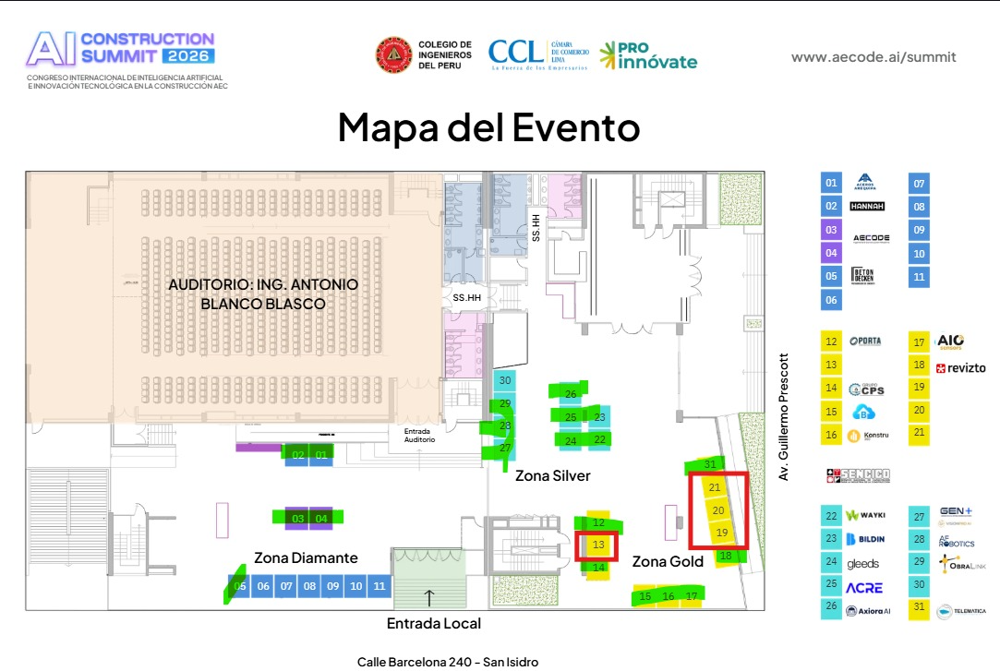

Corte operativo consolidado - 29 junio 2026
Informe completo por areas para cierre del AI Construction Summit 2026
Vista ejecutiva, tablero de control, checklist por etapa, mapa de stands, campos abiertos y proximas decisiones criticas para operar el cierre del evento.
Fase 0 implementada - GEN+ AI Operating System
Decisiones que mueven $2.4M esta semana
Command Center demo para CEO constructor, PM BIM/VDC y Director de Operaciones. Datos marcados como mock y listos para conectar a API real bajo ISO 19650 + PDPL Peru.
Segregacion de datos
MOCK GEN+ - conectar a API real. Cliente Real bloqueado hasta validar permisos.
Command Center Ejecutivo
Bloqueos que estan matando productividad
S-Curve
Avance fisico 67% / valorizado 71%
Plan
Fisico
Valorizado
Heatmap riesgos
3 clashes criticos / 7 RFIs abiertos
Agentes IA ejecutando
3 activos / 1 en revision
Carga equipo
Capacity planning
Resumen ejecutivo actualizado
Informacion general, temas y alcance del Summit
Evento hibrido para acelerar adopcion de IA y tecnologias digitales en AEC, integrando congreso, precongreso, feria, demos, sponsors, comunidad y ventas B2B/B2C.
Areas estrategicas
Bloques clave del proyecto
Lectura ampliada de marketing, speakers, experiencia, tecnologia, diseno, logistica, equipo, contenido, aliados y produccion audiovisual.
Dashboard operativo
Que esta pasando y que se debe decidir
Tablero diseñado para direccion: muestra frentes, urgencias, responsables, riesgos y evidencia disponible sin perderse en mensajes sueltos.
P0
Decisiones inmediatas
Responsables
Carga por owner
Cobertura
Madurez por area
Modo presentacion
Narrativa ejecutiva del estatus
Esta version esta preparada para mostrarse en reunion: primero el estado, luego los bloqueos, despues los owners y finalmente las decisiones.
Modelo de control
Una matriz unica: area, responsable, actividad, fecha, estado, evidencia, bloqueo y decision.
Operacion antes / durante / despues
Cada area tiene acciones previas, ejecucion en evento y cierre post-evento con evidencia.
Criterio de calidad
El Summit debe sentirse premium, tecnologico, comercialmente util y operativamente controlado.
Checklist maestro
Areas, responsables y acciones
Filtra por etapa para revisar que debe pasar antes, durante y despues del evento. Los vacios se mantienen como "No se tiene claro" para no inventar avance.
Feria empresarial
Mapa de stands y ocupacion
Lectura operativa de Diamante, Gold y Silver con pendientes de ubicacion, pagos, beneficios, energia, montaje y experiencia sponsor.

Criterios de aprobacion
Hitos Go / No-Go
Estos hitos ordenan el cierre: si un frente no pasa el control, sube a decision de direccion antes de seguir comprometiendo experiencia, caja o reputacion.
Fechas clave
Cronograma de cierre operativo
Hitos que concentran diseno, ventas, tecnologia, comunicaciones, demos, QR, transmision, curso F3, B2B Training y post-evento.
Riesgos y campos abiertos
Lo que puede romper la ejecucion
Lista viva de puntos que deben resolverse con owner, evidencia y fecha. Se mantiene la incertidumbre explicita para forzar cierre operativo.
Riesgos P0
Campos abiertos
Post-evento
Activos, evidencia y conversion despues del Summit
El cierre no termina con el evento: debe convertirse en prueba de autoridad, leads, ventas, investigacion, contenido y renovaciones.
Trazabilidad
Fuentes del informe
Este sitio resume informacion del vault y debe actualizarse cuando cambien el CRM de sponsors, el mapa, el plan maestro o los sheets operativos.
Plan maestro Summit
Checklist cierre operativo
Organizacion por areas
Mapa de stands
CRM sponsors
Resumen ejecutivo ampliado